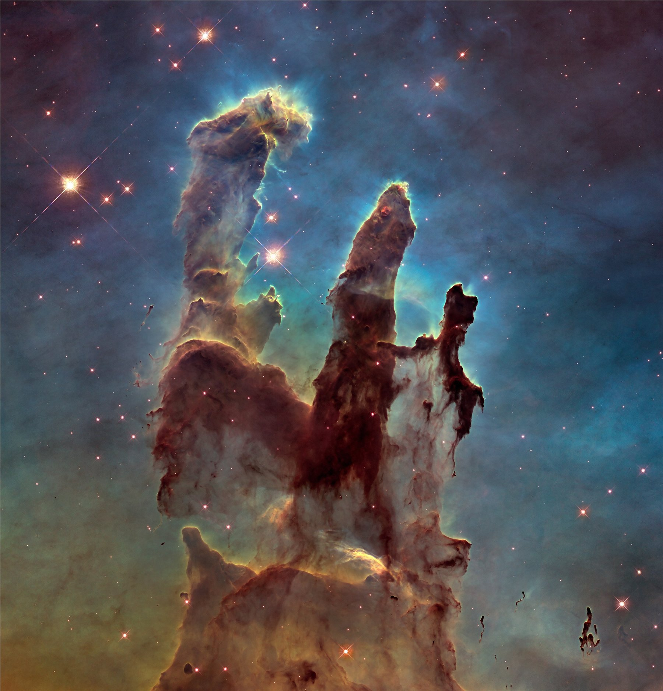

三根深褐色的尘埃巨柱，从阴影中挺立而起，边缘被无形的星光镀成金红色——这张1995年首次拍摄、2014年重新处理的照片，是人类历史上被印刷、转发、致敬次数最多的影像之一。它拍的不是风景，是新生恒星的产房，一场持续了数百万年、此刻仍在进行的宇宙级"分娩"。
三柱错落：三根塔柱高度递减、从左至右排开，形成有韵律感的锯齿状天际线——既是经典三分法的变体，也是刻意打破的不对称平衡，让画面不至于死板。
基座宽阔、柱身收窄：柱体从画面底部的宽厚阴影向上收细，制造强烈的垂直推力，视线被不由自主地引导向上——这正是"崇高"（the Sublime）美学最经典的构图公式：让渺小的观者去感受宇宙尺度。
柱尖的发光气体如指尖轻触星海；柱与柱之间大片的深色负空间（暗尘埃带）不但没有削弱主体，反而强化了它的实体感与重量——柱尖处正是天文学家所说的"蒸发气体球"（EGGs），新恒星最先诞生的地方。
整幅画面的核心是一组互补色对比：暖褐、赤金的尘埃柱体，对撞冷蓝绿色的电离氢氧气体背景——在色轮上，橙红与蓝绿正好相对。这组对比让主体从背景里"跳"出来，同时也是恒星辐射的真实物理编码：柱体反射尘埃的暖光，背景则是被年轻恒星的紫外线电离后发出的蓝绿荧光。
哈勃调色板（Hubble Palette）：望远镜实际捕捉到的是肉眼不可见的窄带波长（氢阿尔法、[OIII]、[SII]等），科学家把每个波段"指派"给一个RGB通道再合成成图——这是把不可见的数据翻译成情绪的"假彩色"技术。不是造假，而是"配色即叙事"的极致案例：色相在这里承载的是真实信息，不只是审美。
轮廓光（rim light）：柱体背后年轻炙热的恒星把柱体边缘"镀"上一层光晕，主体大部分留在阴影里——这与人像摄影里最经典的轮廓光用法一模一样，让厚重的尘埃有了呼吸感和体积感。
多波段分层合成：哈勃并非一次曝光成像，而是用不同滤镜分别拍摄多张窄带影像，再在后期逐层叠加合成——这跟胶片时代的分区曝光、和今天数码摄影的HDR堆栈，本质上是同一套逻辑的不同版本。2014年的这一版由哈勃遗产团队（Hubble Heritage Team）用分辨率更高的第三代广域相机（WFC3）重新拍摄合成，细节比1995年原版丰富数倍。
尺度的错位感：每根柱子实际高达数光年（最高一根接近4光年），但构图和光影处理让它像近在咫尺、伸手可触的雕塑——这种"把不可感知的尺度翻译成可感知的形态"，正是它最厉害的地方。
这里既是恒星的产房，也是它自己的坟场：柱内致密的氢气正在坍缩、孕育新恒星；而周围新生恒星释放的紫外辐射与恒星风，同时也在一点点侵蚀、瓦解这些尘埃柱本身。诞生与消逝在同一张照片里同时发生——这份科学事实自带一种悲壮的诗意。也正因如此，它被印在无数T恤、专辑封面、教科书封面上，成了"科学如何变成大众视觉文化"的最佳范例之一。
1995年的原始版本由天文学家Jeff Hester与Paul Scowen使用哈勃第二代广域行星相机（WFPC2）拍摄，发布后几乎瞬间成为标志性影像。2014年，为纪念哈勃望远镜升空25周年，哈勃遗产团队（Hubble Heritage Team, STScI/AURA）用分辨率更高的第三代广域相机（WFC3）重新拍摄合成了这一版本，即本文所用的图像。
2022年，詹姆斯·韦伯太空望远镜（JWST）用近红外波段重新拍摄了同一片区域，穿透尘埃看到了柱体内部藏着的更多新生恒星——两代望远镜、两种"看见"方式，为同一个题材写下了完全不同的两首诗。